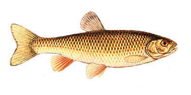
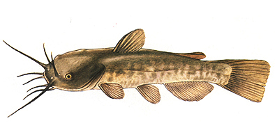

hal neve | latin neve | egy kép róla |
Ponty | Cyprinus carpio Linné | |
Márna | Barbus barbus Linné | |
Dévérkeszeg | Abramis brama Linné | |
Bagolykeszeg | Abramis sapa Pallas | |
Laposkeszeg | Abramis ballerus Linné | |
Szilvaorrú keszeg | Vimba vimba Linné | |
Garda | Pelecus cultratus Linné | |
Kárász | Carassius carassius Linné | |
Ezüstkárász | Carassius auratus gibelio Bloch | |
Küsz | Alburnus alburnus Linné | |
Bodorka | Rutilus rutilus Linné | |
Domolykó | Leuciscus cephalus Linné |  |
Jász | Leuciscus idus Linné | |
Vörösszárnyú keszeg | Scardinius erythrophthalmus Linné | |
Karikakeszeg | Blicca bjoerkna Linné | |
Balin | Aspius aspius Linné | |
Paduc | Chrondostoma nasus Linné | |
Amur | Ctenopharyngodon idella Valenciennes | |
Harcsa | Silurus glanis Linné | |
Törpeharcsa | Ictalurus nebulosus Le Sueur |  |
Csuka | Esox lucius Linné | |
Menyhal | Lota lota Linné | |
Sügér | Perca fluviatilis Linné | |
Kecsege | Acipenser ruthenus Linné | |
Süllő | Stizostedion lucioperea Linné |
Voltál már a Tiszán horgászni?